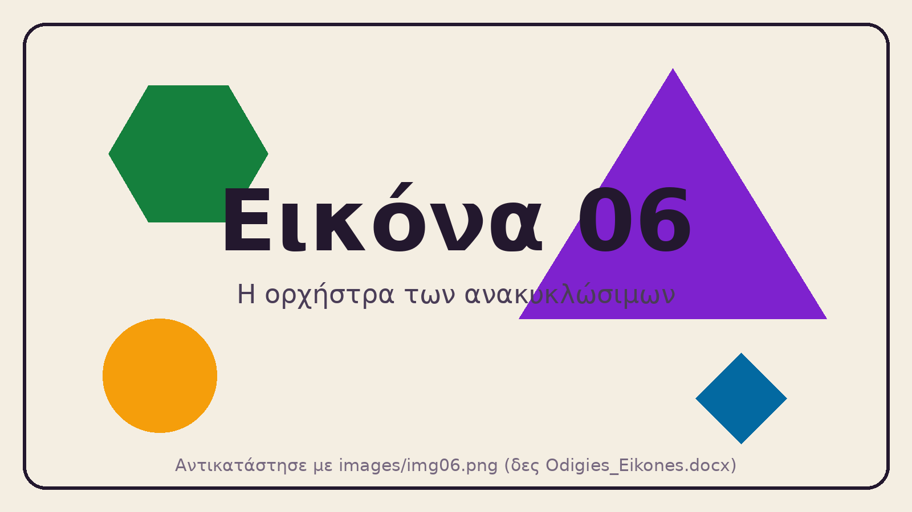

Ένα σενάριο STEAM που μοιάζει καλό. Δύο μαθητές για τους οποίους δεν είναι. Τρία βήματα για να το διορθώσεις.
Η τάξη θα φτιάξει μουσικά όργανα από ανακυκλώσιμα υλικά και θα παίξει ένα μικρό κομμάτι στη γιορτή του σχολείου.

ΔΑΦ. Ενοχλείται έντονα από δυνατούς και απρόβλεπτους ήχους. Αγαπά τα μοτίβα και τα τρένα, και θυμάται λεπτομέρειες. Δυσκολεύεται σε ομάδες χωρίς σαφείς ρόλους και όταν αλλάζει απότομα το πρόγραμμα.
Διαβάζει και γράφει στο επίπεδο της τάξης του.
Κινητική αναπηρία. Κινείται με αμαξίδιο και έχει περιορισμένη λεπτή κινητικότητα στα χέρια: το ψαλίδι, η κόλλα και τα μικρά κομμάτια τη δυσκολεύουν. Έχει πολύ καλό προφορικό λόγο και ιδέες, και της αρέσει να τραγουδά.
Γράφει αργά με το χέρι και κουράζεται.
Τα πρόσωπα είναι φανταστικά. Οποιαδήποτε ομοιότητα με πραγματικούς μαθητές είναι συμπτωματική.
Τίποτα δεν αποθηκεύεται ούτε αποστέλλεται. Στο τέλος πατάς «Σύνοψη» και αντιγράφεις το κείμενο.
Ποια γράμματα υπάρχουν πραγματικά με τον αυστηρό ορισμό; Πάτα όσα ισχύουν.
Σε ποια σημεία του σεναρίου (βήματα 1–5) δυσκολεύεται κάθε μαθητής; Γράψε το βήμα και το εμπόδιο.
Μία αλλαγή ανά αρχή, για όλη την τάξη, όχι μόνο για τους δύο μαθητές. Γράψε και την κατευθυντήρια γραμμή που αφορά (αριθμός 1–9).